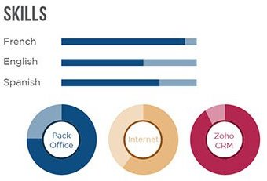

Accessible hiring
Web accessibility is being downplayed by the Trump administration, but others are picking up the slack, further increasing the incentives for website owners to make their sites friendly to users with disabilities and below-average digital fluency. I’m working on a tool that helps you make your résumé accessible, too.
Accessibility news
I started taking web accessibility seriously on 1 January, when I had 7 weeks to go before my software-development training at Learners Guild ends. I expected to inform myself on that topic in 2 or 3 weeks and then move on to strengthen my skills in related aspects of software quality.
Web accessibility turned out to be big. It still seems premature to turn to another track. I’ve reported some of what I’m learning about it in the last 3 blog entries, and here’s some more.
A few days ago the CEO and the Chief Accessibility Officer of one of the top firms in accessibility consulting gave a webinar about digital-accessibility trends and forecasts for 2018 and beyond. They reported that the Trump administration, as one would expect, has decreased its rule-making and its enforcement of existing regulations on web accessibility. But they don’t expect this loss of federal vigilance to ease the pressure on the owners of websites to make those sites accessible, for three main reasons:
- The world population is becoming older, and as it does the elderly are becoming more frequent users of web technology. Websites that fail to respect the needs of users with sub-average vision, hearing, memory, dexterity, and continence will therefore lose an increasing share of their potential users. If you want market share, don’t ignore accessibility.
- At least in the United States, nongovernmental activism to compel digital accessibility is exploding at a rate that far counterbalances the Trump administration’s lassitude. The count of digital-accessibility lawsuits filed in federal courts grew from 15 in 2013 to 814 in 2017.
- The federal government’s regulatory relaxation actually exacerbates the risk to which the operator of an inaccessible website is exposed, because it decreases the precision of the enforceable standards, increases the complexity of disputes, and thus increases the expected cost of resolving any complaint.
I would add to that third point that federal inactivity might also provoke state-by-state regulation, which might be more difficult to comply with than a single set of federal standards.
Two opposing trends could push against the predicted growth of accessibility pressure. One is the confirmation of additional anti-regulation justices on the U.S. Supreme Court. Another is statutory amendments restricting the public’s right to make civil claims to enforce disability rights.
Accessible résumés
We who compile résumés about ourselves to transmit to employers and recruiters often agonize about the choices we face: What to include and exclude? How fancy? What order? How pretentious?
Since I’m working on accessibility these days, I’m also asking myself How accessible?
, and by answering Very
I can then figure out how to make a résumé accessible. Doing that should help not only hiring managers and recruiters with disabilities read my résumé; it should also help machines do so. These days it is crazy to ignore the needs of machine readers. In my experience, they do a miserable job, and they need all the help we can give them.
There’s some advice on the web about this, derived from general advice on how to make any digital document accessible. There are also vendors claiming their résumé templates are accessible
, when in reality they are not (at least in the sense used here). They seem to mean convenient for somebody without any disabilities
. Their templates contain elements that would be lost on users who depend on screen readers, such as this one:

I decided to spend my 37th week at the Guild creating a tool for producing accessible résumés. It will be a theme
in the jsonresume project. I’m still working on it, but you can see what it currently produces.
Its accessibility derives in part from its plainness. It has no animations and no complex layout. It also has metadata embedded in the page that help a user, or an assistive device, understand the meanings and purposes of some items that might need explanation. These appear as tooltips if the user makes a mouse hover on some items. The sections of the résumé are also classified as logical sections of the page, so an assistive device can help its user skip to whatever section the user wants to attend to. Although there are some subtle color differences, color is never relied on as the only identifier of the function of any text. Next week I hope to add some more accessibility features, refactor the code to make it easier to maintain, fully document it, and publish it for use by others.